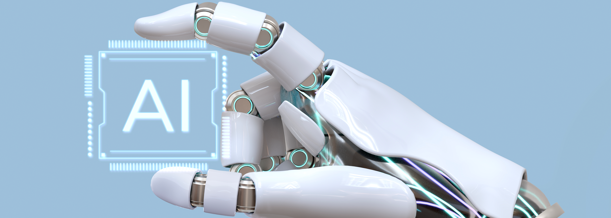
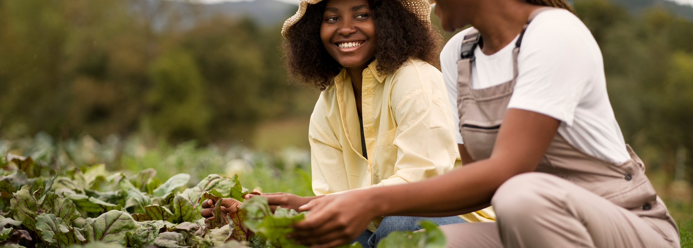

PROPOSTA
Nossa proposta é desenvolver uma solução 360° desde os pequenos e médios produtores, com soluções logísticas, de distribuição e de alta eficiência para reduzir o desperdício, o prejuízo e melhorar a qualidade dos alimentos atuando em 4 etapas.
À nossa jornada em direção a um futuro mais sustentável e eficiente! Aqui, apresentamos nossa proposta inspiradora e transformadora: desenvolver uma solução 360° desde os pequenos e médios produtores, com soluções logísticas, de distribuição e de alta eficiência para reduzir o desperdício, o prejuízo e melhorar a qualidade dos alimentos.
🌱 Nós acreditamos que cada alimento tem uma história para contar, e nossa missão é garantir que essa história seja valorizada desde o campo até a mesa. Ao trabalhar em quatro etapas cruciais, estamos empenhados em revolucionar a cadeia produtiva e criar um impacto positivo em toda a sociedade.
Subsídio ao produtor.
Capacitação e suporte aos produtores de pequeno e médio porte para melhoraria da produção proporcionando melhor eficiência, sem utilizar de subterfúgios genéricos. Construção de estruturas de agricultura vertical, reconhecimento informações relevantes do plantio através de um APP.
Nosso compromisso começa com os pequenos e médios produtores, a espinha dorsal de nossa agricultura. Oferecemos suporte técnico especializado, tecnologia de ponta e inovação agrícola para impulsionar sua produção, aumentar a eficiência e garantir a qualidade superior dos alimentos. Juntos, podemos construir um futuro promissor para cada produtor.
Logística compartilhada.
Para melhorar os custos de transportes, tempo de entrega e redução de perdas, atuar com motoristas autônomos para otimizar a logística, o caminhão fará uma rota de coleta, em regiões que possuem rota de entrega próximas (Sistema de rotas inteligentes).
A logística é o coração pulsante de toda a cadeia de abastecimento. Utilizamos soluções inteligentes e conectadas para otimizar o transporte, armazenamento e distribuição dos alimentos. Ao alinhar a oferta e a demanda de forma eficiente, reduzimos custos, encurtamos prazos e garantimos que os alimentos cheguem frescos e saborosos até você
Ferramentas e insumos.
Disseminar o conhecimento para a confecção de subsídios necessários na aplicação da agricultura vertical, como as colunas de plantio, coleta e reuso de água de chuva, construção de estufas, controle natural de pragas e infestações, otimizando a produção e as perdas durante a colheita.
Tecnologia.
Desenvolver um sistema capaz de instruir o produtor e otimizar a produção de acordo com as necessidades de cada plantio, controle água, solo, temperaturas, pragas e infestações, através do uso de smartphone, drones e/ou satélites.
O desperdício de alimentos é uma preocupação global, e estamos determinados a enfrentá-la de frente. Utilizando tecnologias avançadas, implementamos estratégias de rastreamento e gerenciamento de estoque, garantindo uma cadeia de suprimentos enxuta e minimizando perdas. Nosso objetivo é tornar o desperdício uma história do passado, permitindo que cada alimento seja valorizado e apreciado.
Acreditamos que todos merecem ter acesso a alimentos de qualidade.
Ao melhorar a eficiência e reduzir os custos ao longo da cadeia de abastecimento, tornamos possível oferecer alimentos frescos, nutritivos e saborosos a preços acessíveis. Nossa solução 360° visa alimentar o mundo de forma sustentável, garantindo que ninguém seja deixado para trás.
Estamos entusiasmados em convidar você a embarcar nessa jornada conosco. Nossa proposta é mais do que um negócio; é uma oportunidade de transformação e mudança positiva. Ao escolher nossa solução 360°, você está escolhendo um futuro melhor para os produtores, para a sociedade e para o planeta.
Não perca tempo! Entre em contato conosco hoje mesmo e descubra como podemos trabalhar juntos para reduzir o desperdício, o prejuízo e melhorar a qualidade dos alimentos. Juntos, podemos construir um mundo mais sustentável e nutritivo para as gerações futuras. Estamos ansiosos para fazer parte da sua história de sucesso!
